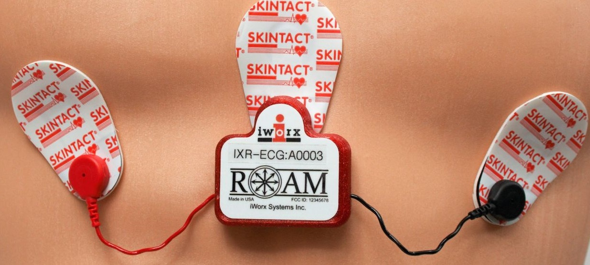

Wireless ECG System
This was my first experience developing code for a BLE connected device. This device can wirelessly transmit accelerometer and ECG data to a receiver so it can be processed by data logging software. I didn’t get a chance to work on the hardware, but I did write code for the firmware and develop the enclosure and charging box. This was the first acquisition system I worked on that didn’t have real-time data transmission which resulted in some special requirements for buffering and packing the data. There were two variants of receiver: USB and a proprietary UART for interfacing with an existing acquisition system. The chain of communication was comprised of three microcontrollers for the USB and four for the UART. This necessitated a communication structure that allowed me to address data to or from some target microcontroller.
There are plenty of asynchronous events that can occur within the system such as a disconnect. I created a notification channel to alert the host controller to respond in some way. I also used this channel to queue asynchronous data from the Bluetooth peripheral so that I could readily respond to requests from the host computer.
Bandwidth can also become a problem if care isn’t taken to ensure you have enough bandwidth overhead to “catch up” if one or more packets fails to transmit from the peripheral. With a larger MTU the impact of a dropped packet becomes greater than with a smaller MTU provided your latency is held constant. With a fixed data rate, minimizing latency inherently reduces the MTU size which improves data fidelity. If the device dropped a packet, I needed to make sure I had enough overhead to send two packets without increasing latency long-term. To solve this problem, I set the latency as low as it would go (7.5ms) but setup my peripheral to only transmit data every 20ms. Th difference between the connection latency and packet timer on the device allow it to recover from failed transmissions more quickly. The device will only buffer so many packets before it is forced to start dropping packets to acquire new data.
I modeled and printed a charger box for the enclosure using an annular snap around the pocket for the device to hold it in place during charging. It worked OK but sometimes if you didn’t insert it right it wouldn’t make good contact with the charging pads. There was a steel can to protect the analog portion of the circuit from noise that I figured I could use to magnetically pull the device into the right position. This worked much better and was implemented in my final revision. The roam lettering on the top of the box had the dual purpose of looking cool and holding the device in place.
Here is a little animation I made in Blender.